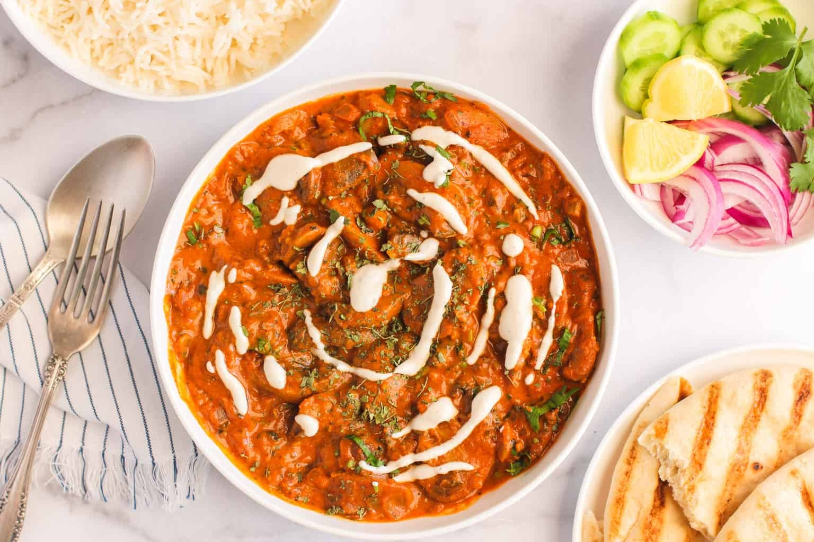

Mushroom Masala

Description
Mushroom Masala is a versatile dish that packs in a burst of flavors from earthy mushrooms, tart tomatoes, and aromatic spices. The intense flavors are balanced with easy homemade cashew cream. Ready in under 20 minutes and savory to the last bite, this curry is sure to win you the master chef crown at your next party.
Ingredients
- 1 pount white mushroom(rinsed, dried and sliced)
- 2 tablespoons ghee
- 1 large yellow onion(finely chopped)
- 2 teaspoons ginger grated
- 2 teaspoons garlic minced
- 3/4 cup tomato puree(or 2 fresh ripe red tomatoes pureed)
- 1/2 teaspoon ground turmeric
- 1/2 to 1 tablespoon Kashmiri red chili powder(or any other mild red chili powder)
- 1/2 to 1 teaspoon garam masala
- 1 teaspoon kosher salt
- 1/3 cup cashews
- 1 tablespoon kasoori methi
- cilantro leaves chopped for garnish
Steps to prepare
- Soak cashews in ½ cup warm water for 10 minutes and set aside. Drain all the water and blend the cashews with ¼ cup of water to make smooth paste and reserve.
- Set the Instant Pot to saute mode and heat add ghee. Add onions and cook for 3 to 4 minutes with a glass lid on, stirring a few times. Add ginger and garlic, cook for 30 seconds. Turn the Instant Pot off.
- Add tomato puree, turmeric, red chili powder, garam masala salt, and mushrooms. Mix well, deglazing the pot to remove any browning on the bottom of the pot. Close the Instant Pot, and pressure cook(Hi) for 4 minutes followed by Quick Release.
- Stir in kasoori methi, cashew paste, and chopped cilantro. Mix well and serve with Basmati Rice and parathas. For a low-carb meal, serve mushroom masala over cauliflower rice. Add a side of cucumber salad for a delicious meal.